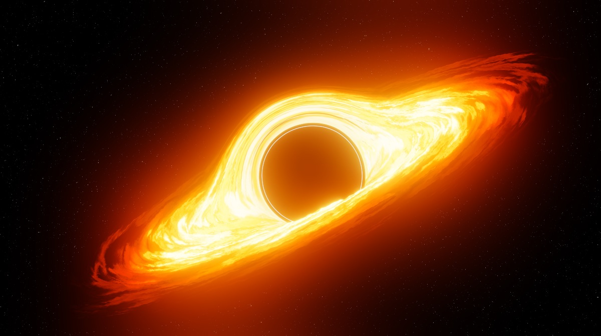

Los agujeros negros son los restos fríos de antiguas estrellas, tan densas que ninguna partícula material, ni siquiera la luz, es capaz de escapar a su poderosa fuerza gravitatoria. Mientras muchas estrellas acaban convertidas en enanas blancas o estrellas de neutrones, los agujeros negros representan la última fase en la evolución de enormes estrellas que fueron al menos de 10 a 15 veces más grandes que nuestro sol.
Cuando las estrellas gigantes alcanzan el estadio final de sus vidas estallan en cataclismos conocidos como supernovas. Tal explosión dispersa la mayor parte de la estrella al vacío espacial pero quedan una gran cantidad de restos «fríos» en los que no se produce la fusión. En estrellas jóvenes, la fusión nuclear crea energía y una presión exterior constante que se encuentra en equilibrio con la fuerza de gravedad interior que produce la propia masa de la estrella. Sin embargo, en los restos inertes de una supernova no hay una fuerza que se resista a la gravedad, por lo que la estrella empieza a replegarse sobre sí misma.Sin una fuerza que frene la gravedad, el emergente agujero negro encoje hasta un volumen cero, en cuyo punto pasa a ser infinitamente denso. Incluso la luz de dicha estrella es incapaz de escapar a su inmensa fuerza gravitatoria, que se ve atrapada en órbita, por lo que la oscura estrella se conoce con el nombre de agujero negro. Los agujeros negros atraen la materia, e incluso la energía, hacia sí, pero no en mayor medida que otras estrellas u objetos cósmicos de masa similar. Esto significa que un agujero negro con la misma masa que la de nuestro sol, no «aspiraría» más objetos hacia sí que nuestro sol con su propia fuerza gravitatoria. Los planetas, la luz y otra materia deben pasar cerca de un agujero negro para ser atraídos dentro de su radio de acción. Cuando alcanzan un punto sin retorno, se dice que han entrado en el horizonte de sucesos, un punto del que es imposible escapar porque requiere moverse a una velocidad superior a la de la luz. Los agujeros negros tienen un tamaño pequeño. Un agujero de una masa solar de un millón, como el que se sospecha que se encuentra en el centro de algunas galaxias, tendría un radio de unos tres millones de kilómetros, es decir, sólo unas cuatro veces el tamaño de nuestro sol. Un agujero negro con una masa igual a la del sol tendría un radio de tres kilómetros.